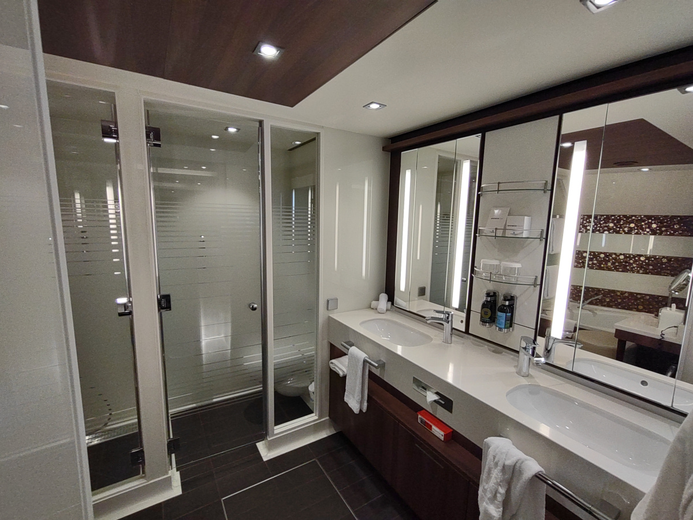
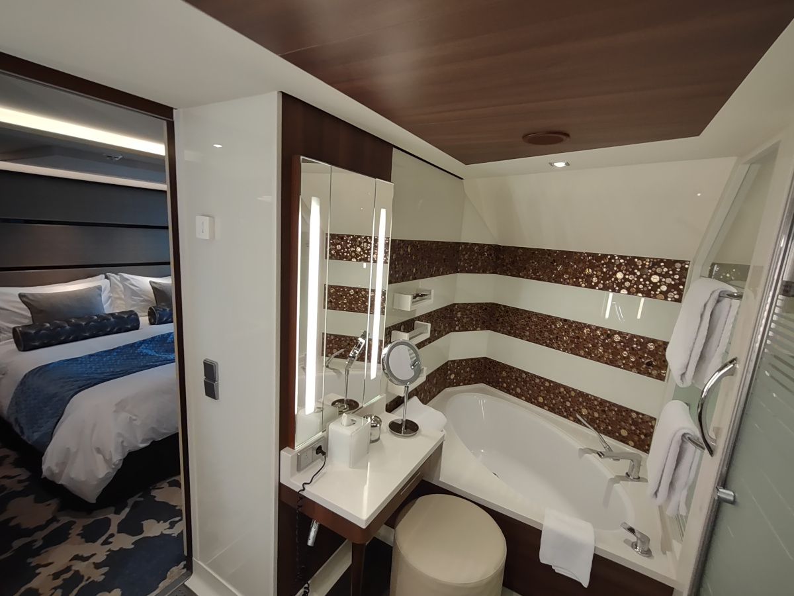
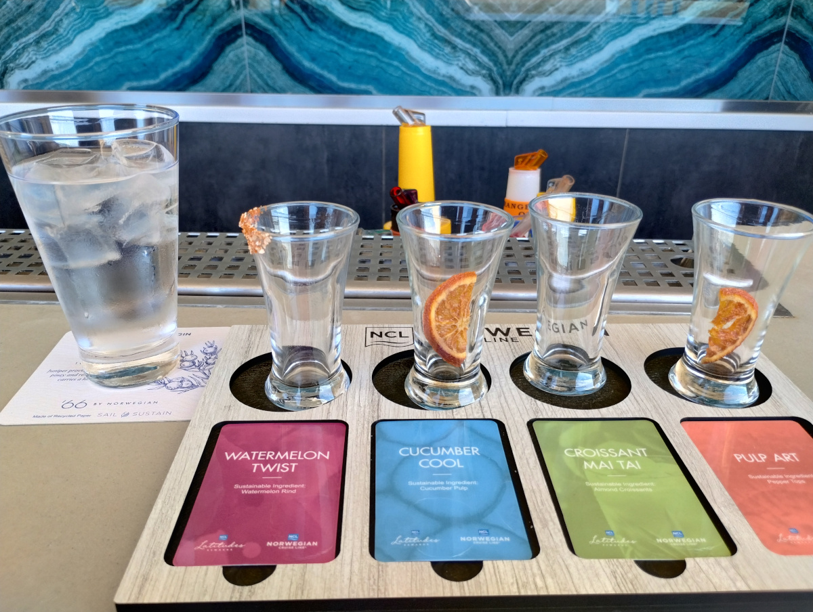
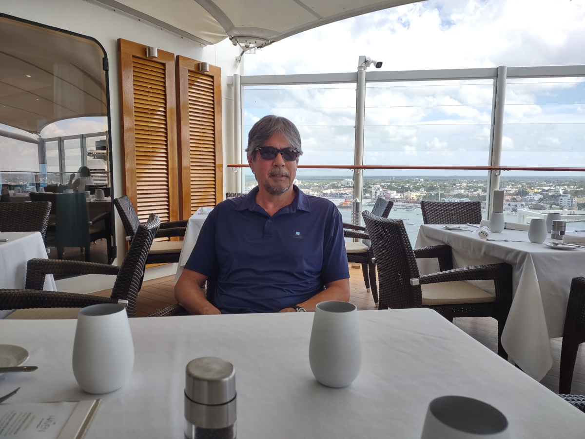
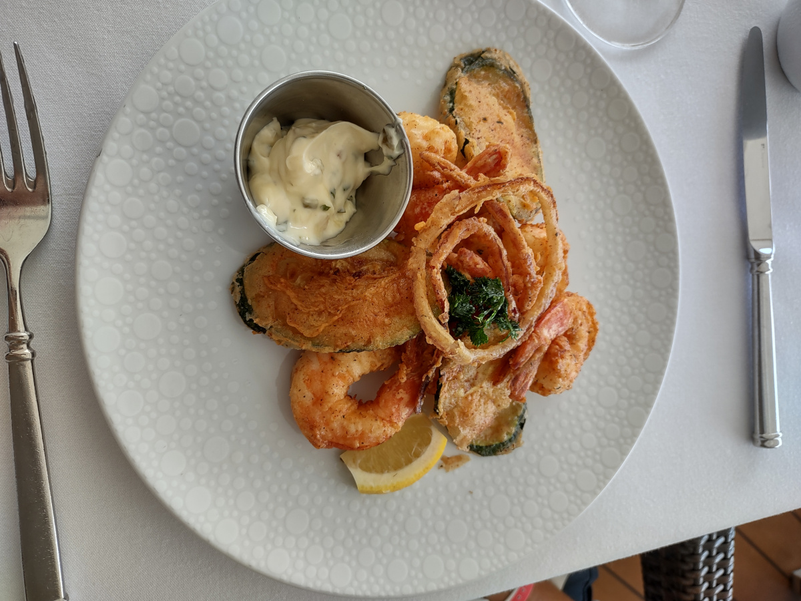

Thursday: Travel day – flying to Miami
Becky and I flew to Miami to catch a seven day Caribbean cruise on the Norwegian Joy. The cruise is a round trip from Miami, and we will stop at four ports: Roatán in Honduras, Harvest Caye (NCL’s private island) in Belize, Costa Maya in Mexico and Cozumel in Mexico. Along the way we will have two sea days.
Our trip started with an early morning drive to Van Nuys to catch the Flyaway bus to LAX to catch a 6:15am departure to Miami on American Airlines.
We got up at 1am and left the house at 2:10am. There was no traffic along the way, but there was a bit of fog. We made it to the bus terminal by 3am and by 3:30am we were on the bus headed to LAX. By 4:30am we had our bags checked, made it through security and sat at the gate for about one hour until boarding.
Our flight to Miami lasted about 5 hours. We departed at sunrise and flew east over Los Angeles and Arizona. At some point there were too many clouds below us to see the land.
We were served pre-takeoff beverages, I had a coffee with Baileys and Becky had orange juice with vodka. We were served omelets for breakfast. I started the second chapter of “How the Irish Saved Civilization”, which I’m finding very interesting.
After collecting our bags, which took about 30 minutes, we went outside to the hotel shuttle pick-up spot. The temperature outside was in the low 70’s. When we got on the van there were two guys sitting in the front of the van, which seemed a bit unusual when I thought about it later. We were waiting at door number three, so I told Becky that we still have to pick up at the other terminals so the van might get crowded. We made it almost to the last terminal before stopping where the two guys got out. So Becky and I moved up to the first row in the van, since a big group of people were getting on. That way she could get off the bus first and get us checked in, or so we thought. It took a while to get everyone’s bags loaded and for them to all get aboard. Then the two guys who had been in the van when we boarded got back on.
I said to one of them, ‘sorry, we took your seats, I didn’t know you were coming back.’
He said, ‘no worries, we had to return a bag and thought we would be catching the next van’. Then he proceeded to explain that he had picked up someone else’s bag and got a call from the airline asking if they had the wrong bag, which they did, and that’s why they were back at the airport.
At the hotel, the desk clerk would not let Becky check us in since the reservation was in my name. Becky said, “But he’s right outside collecting our bags.”
“I need to see him face to face”, was his answer.
By then, the large group was lining up behind Becky when I showed up and we proceeded with the check-in. The leader of the large group, and we could tell they all knew each other by the conversations in the van, was informed that he was at the wrong hotel. We never asked the driver which address he was going to and just assumed we were going to ‘our’ hotel. Lucky for us, we were in the right van. Becky had gotten the instructions and was told to just get on the red Town Place hotel van, like there would only be theirs that pick up at the Miami airport.
Dinner was Cuban sandwiches from a nearby Cuban restaurant, which was about a five minute walk. They were good but a little too much bread and meat.
Friday: Miami, pre-cruise stay
Our pre cruise hotel was the TownePlace Suites by Marriott, about one mile from the Miami Airport terminal. We flew into Miami two days prior to our cruise to ensure that we would make it to Miami for our cruise. Flying in two days early means that we probably could make the cruise even if we experienced a big delay or missed our flight. On the other hand it means that we have a full day in Miami without much to do.
The hotel has a complimentary breakfast each morning. Breakfast consisted of scrambled eggs, bacon, sausage biscuit, oatmeal, cheese, yogurt, muffin and coffee. Overall the free breakfast was mediocre. I did take two yogurts to have for later. The only complaint about the hotel is the low flow shower head, it’s really low flow.
The weather today was clear and calm in the morning, but in the afternoon it was partly cloudy and windy.
There was a Target store and shopping center located about a 15 minute walk away. The Target store looked brand new. It was the biggest and nicest Target store I’ve ever seen. Becky bought some wool winter socks. Why do people in Miami need wool socks? Who knows. We visited a Walgreens, a liquor store, a store called Government Discount, which reminded me of a Big Lots, but it was bigger. We also stopped into a grocery store called Fresco y Mas.
On our walk back to the hotel we bought burritos at a place Becky found on-line called Taqueria Los Potrillos. We bought chicken burritos which were very good. In fact we both thought they were much better than the Cuban sandwiches we had yesterday.
Saturday: Embark NCL Joy
I was up early since I couldn’t sleep. I took an early shower and made a cup of coffee and it rained overnight, the forecast calls for clearing weather later in the day.
We had a light breakfast at the hotel. Breakfast room was more crowded than the day before and there were lines for the food, coffee and waffle maker. We had some coffee and a ham and egg breakfast sandwich. We were done in about 10 minutes. We didn’t need to fill up since we would be getting food on the ship. Back in the room we finished packing up and decided to schedule a Lyft pickup for 9:40am. Our port check-in time that was assigned 21 days ago was for 9:30am to 10am and the drive from the hotel was only 20 minutes. The Lyft driver arrived about 20 minutes early. We could see his car from our 6th floor window and then I got a text from him saying he had arrived. So I answered back and we went downstairs to check out of the hotel and get our bags loaded in his car.
He asked us, ‘is music Okay?’ We said yes, and he put on some Cuban Salsa music. He was a very aggressive driver and liked to change lanes a lot and got honked at several times.
At the terminal we dropped our check on bags with a porter and proceeded into the terminal. NCL’s terminal was finished just as COVID started and sat unused for much of the pandemic. The terminal is a nice big terminal with very high ceilings and big glass walls that are about six stories high. We have been in the terminal for two other cruises. The acoustics in the terminal are poor and it’s hard to make out what the announcements are saying. The volume is loud enough, but there’s so much other noise in the room. Also the bathrooms are in short supply, as well as seating when the terminal gets full. Lots of passengers end up either sitting on the floor or standing around.
On this cruise we are staying in a suite, so we got to wait in the VIP section, which has a special check in area, with a separate elevator and security checkpoint.
I tried to sneak two mini bottles of Baileys Irish cream (that we got from the airline) through the security checkpoint, but got caught. The bottles were confiscated and I’ll need to pick them up at the end of the cruise at the terminal’s guest services office. The security guard saw the bottles in my pockets and asked me to empty my pockets and put the contents in the tray for x-ray. I was given the option to pay $15 per bottle corkage fee. I wanted to sneak the bottles on to avoid having to pick them up later, so my plan failed. I should have just left the bottles loose in my carryon suitcase, because I don’t think they are checking that close.
The VIP section of the terminal is elevated above the main waiting floor and from there we can see all the security operations and waiting area for regular passengers. On a previous cruise we could somewhat see the VIP guests if they were standing at the rail. Since it was our first time up in the VIP section we were taking lots of pictures. At some point, security came up to Becky and told her no photography is allowed. He said, ’you need to delete all those pictures you took.’ And he waited while Becky moved the photos to the trash can, then showed the security guy and then he left. We don’t remember seeing any signs, but I guess it’s like airport TSA where no photos are allowed. Did he really think the photos were permanently deleted or was that just for show? Later, we saw other guests taking photos of the same areas, but the terminal was much more crowded by then and maybe security had other things to do besides keeping an eye out for people taking pictures. We each got busted for something, not a good start.
Boarding didn’t start until about two hours after we arrived, sitting in the VIP waiting area with coffee and snacks was nice. I had a cup of coffee and it was the strongest coffee I’ve seen in a long time; I needed to dilute it by 50% with hot water. The only snacks I had were some cookies, which were very good with the coffee.
Getting on the ship was not that smooth of a process. There were several hundred VIP guests and we were led as a group to the gang way for boarding, but the key card readers stopped working, so we had about a 20 minute wait. Then once on board there was another wait for the elevators to take the suite guests to deck 17, where most of their rooms are located. Becky and I skipped the elevator line and went to the cruise next desk to sign up for the week’s events. Then we went to our cabin to drop off our carry-on luggage.
Our cabin on this cruise is on deck 12 and is a forward facing penthouse with a side balcony. The cabin (414 square feet in area) has a separate bedroom and living area. The balcony for our cabin was on the small side at 27 square feet in area. Since the cabin is forward facing we have a large porthole window with a view of the front of the ship and the wall on this side of the cabin is sloped.



Prior to sailing Becky requested room amenities of M&M’s, extra firm pillows, orange juice (for the sparkling wine) and milk for coffee. The only item missing was the extra firm pillow for me, but I didn’t notice it wasn’t delivered until bed time. I never did ask for the extra firm pillow since the regular ones were fine. Our cabin comes with access to the Haven exclusive areas which include the Haven Horizon Lounge, Haven pool and the Haven dining room, which serves breakfast, lunch and dinner.
After dropping off our bags in our cabin, we went out to explore the ship. The Joy had just come out of dry dock and there were some changes made to the ship since we last cruised on her. The spa received a big upgrade with additional features added like a thermal pool (hot tub), hot sauna and a steam room and a rain shower (kind of hard to describe). To make room for the added spa features, the Galaxy Pavilion was removed; the Galaxy Pavilion was a large virtual reality arcade.
Later we had lunch in the Haven dining room. I had a Cobb salad and Becky had the Shrimp scampi and we shared the Seafood Fritto Misto (Fried calamari, shrimp, scallops, onions, zucchini and remoulade sauce). After lunch we went to the buffet, which was very crowded to look at the special desserts on the first day and we brought the desserts back to the room to have later with coffee. Becky’s check-on bag came first, mine came about 1 hour later.
At 5pm the ship started to leave the dock so we went up to the observation lounge to watch sailaway. The Icon of the seas was docked in front of us and we had a good view of the world’s newest and largest cruise ship.
We had dinner in the Haven restaurant. I had lobster deviled eggs, soup and a crab cake. Becky had the Shrimp Louie, beet salad and Surf and turf. She didn’t want all the steak, so I ate some of hers. For dessert we split the chocolate cake and each had a scoop of ice cream.
The show tonight was called, Beatles Story: Fabulous Tribute Show, history from 1962 to 1966, which was about 20 songs played by four musicians dressed up to look like the Beatles. The show was good and the songs were all their well known hits.
After the show we went to the ship’s gift shops, since they were now open to look for something to buy with our non-refundable on board credit. We will probably buy a bottle of rum if we can’t find anything else to spend the money on.
Making it to the ship on embarkation day is crucial since the opportunity to join the ship at the first port would be very difficult for this itinerary. Missing a cruise ship is not covered completely by my travel insurance. The travel insurance I have will cover trip delay and interruption for up to $500 per day for actual expenses incurred and not reimbursement for the cost of a cruise if you miss the ship.
Sunday: at sea
The ship’s location at daybreak was off the coast of western Cuba. I got up early, made a cup of coffee and ate the brownie from the buffet we took yesterday. The skies were clear and the air temperature was about 65F.
We had breakfast in the Haven dining room. I had Poached Eggs ‘Meurette’ and Becky had an omelet. I’m working my way down the breakfast menu. After breakfast we went down to the lobby where morning trivia takes place. When we got there, a Sudoku challenge was about to start. The guests participating had 15 minutes to solve the puzzle and about 10 were able to do so. The next event was trivia and Becky and I didn’t join any other teams. We got 10 of 20 questions correct and the high score was 15 out of 20.
Overnight, our on-board credit was loaded to our account, so now we could see the exact amount. There were some small charges for tax on drinks served while in the Port of Miami and we had $124 to spend. Since we had time before our next event, we stopped by the gift shops to look around and Becky noticed that they were selling a brand of watches called Swatch, which she likes. She reminded me that I lost a bet a few years ago where I bet her a Swatch that she could not get into the pool because it was so cold; for a Swatch, I found out she could. She found one that she liked for $64 and we used some of the on board credit to make the purchase.
Our first event of the morning was wines around the world wine tasting. This is a free event for Latitude Sapphire and above members. While we were waiting, the Assistant Hotel Director walked by and I said, ‘Hey Trevor’, to get his attention. We know Trevor from previous cruises and from other ships. One of the other guests who was standing nearby asked if we were the other Ambassadors and we said yes; she was also an Ambassador and her name was Lidia. During the wine tasting event, Becky and Lidia talked a lot. Wine tasting on the Joy was conducted differently than other ships, here it was more like a class and less socializing. At the wine event I met Dan who was traveling solo.

We had lunch in our room, which was BLT sandwiches from room service. We also stopped by the Haven lounge and took two plates of various food back to our room.
At 1pm we attended the Latitudes party. A table was reserved for the Ambassadors, which was nice. Dan also joined us at our table. The Latitude party is more or less a short sales presentation for what Norwegian calls their Cruise Next Program, where you can put a deposit down on a future cruise and receive cash back in the form of non-refundable credit.
At 2pm we attended the Mixology event, which is free for Latitude Diamond members and above. This was held outside at the Mojito Bar. The weather was sunny and not too windy or hot. We sometimes skip this event since we don’t care for the drinks served at the event. Lidia, Becky and I were the only ones who attended.
Around 5pm the captain made an announcement about stopping for a fishing vessel that looked like a small raft. The occupants said that they were just fishermen and didn’t need assistance.
At 6pm we attended the Captain’s VIP party, which we always attend. Sometimes the party is very crowded, but this evening not so much. The drinks and Horderves are usually very good. Lidia was also at the party. Suite guests and Latitude Ambassadors are invited to the Captains VIP party. Lidia is staying in a regular balcony cabin, but she is a brand new Ambassador.
After the party we had dinner in the Haven restaurant. I had the Pan Seared Steelhead Trout, not so good this time – under cooked in the middle, and Becky had one crab cake and a lobster tail.
Monday: Roatán, Honduras
I woke up early, fixed a cup of coffee and did some work on the computer. Breakfast was avocado toast for me and Becky had french toast.
The ship docked at Roatán, Honduras around 9am. As we left the ship it was lightly raining, but not enough to make us put up our umbrellas. There is ongoing construction at the port area and we wanted to see what was new. It took about 15 minutes to see what’s new and take some photos.
We spent the remainder of the morning at the sun deck, then went to swim in the pool, but it was very cold and I could only stay in for a minute.
Lunch was in the Haven restaurant and we had the fish sandwich with no bun. The fish seemed a bit undercooked, so I just ate around the edges. Becky also had a Ceasar Salad and we order
In the afternoon we played a game called word worm. You are given a category and a letter. Then you think of a matching word, the next word then needs to start with the last letter of the first word and also match the category. You get one point for every word.
Our dinner tonight was at the French restaurant called Le Bistro. I had Coq au Vin and Becky had the Lamb chops.
After dinner we went to the comedy show, which was so-so. The show was PG-13 and mainly parity songs with some bathroom humor. For our night cap, I had a brandy on the rocks and Becky had a Carajillo, which is an espresso liquor; she didn’t like it too much.
Tuesday: Harvest Caye, Belize
Today’s port was Harvest Caye in Belize, which is NCL’s “private island”. I woke early, made coffee and did some work on my laptop. We ordered room service breakfast for delivery at 7am. By 8am the ship had been cleared and we went ashore. The skies were partly cloudy and the temperature was about 80F. On the island, there are shops, restaurants, bars and a small zoo called the Wildlife Experience. The most interesting thing in the Wildlife Experience is the butterfly cage. There were two types of butterflies, one with blue wings and another called the Owl Face (or something like that).
There is a very nice pool on the island and we spent about two hours lazing on the lounge chairs by the pool. When we arrived, not too many people were there and we had our pick of lounge chairs and umbrellas in the shade. The water felt cold and when the sun went behind a cloud it was a little chilly. The food and drink on the island is not included in the cruise fare.
A bit before noon, we walked back to the ship and went for a swim in the Haven pool. We sat on the pool mezzanine, ordered lunch and drank a beer. Before going back to the room, we ordered a carrot cake from the lunch menu to be our dessert for dinner. If you let the restaurant know before lunch service ends, most items on the lunch menu can be served for dinner.
We were back in our room by 2pm, just in time for some chocolates to be delivered. So we had a piece of chocolate and a cup of coffee. Later I took a nap and at about 4pm the butler delivered cookies and cruditees.
Before dinner we had cocktails. Dinner tonight was at the Haven restaurant and I ordered Surf and Turf and Becky ordered Lamb. I gave my lobster to Becky. The lobsters on this cruise are bigger and tastier than on previous cruises, according to Becky. Now they charge $25 for a second lobster. Before you could get at many as you wanted. I’m not a lobster fan, so Becky could have two tails, mine and hers, but so far one is enough.
After dinner we went to listen to music performed by one of the bands. They were singing mellow country hits, like songs from the Eagles and John Denver. They were very good. We didn’t stay too long since we wanted to watch the show in the main theater; tonight’s show was the Beatles Story – Sgt. Pepper’s. We like some of the Beatles’ music, but not so much from this era. The theater was very full and we sat in the VIP area, something we don’t normally do, since there is a different row that we like better since it has better visibility.
Tonight we had to turn the clock forward one hour.
Wednesday: Costa Maya, Mexico
We had our morning coffee in the Horizon lounge before breakfast. Next on my breakfast line up was the Eggs Benedict. The Joy was the first ship to dock. There was a Carnival and a Royal Caribbean ship also docking at Costa Maya. The winds were strong and there was a large swell at the dock and we could see the water splashing onto the dock sometimes. A few minutes after tying up, the Captain announced that it was not safe to remain at dock and that we would be leaving. We pulled away a few minutes later. Since we missed the port we were refunded $20 in port taxes.
We spent the morning by the pool doing some reading. After lunch we watched a movie. On demand movies are free in the suites.
We had drinks at the A-list bar and dinner at Ocean Blue, a sea food restaurant. We both had the Sea Bass for our main course. Becky also had the Shrimp (both plates) and clam chowder. I had the Gumbo.


Thursday: Cozumel, Mexico
We had early coffee in the Horizon lounge with some fruit and danishes. For breakfast I had the Shrimp Toast and Becky had the egg white frittata The ship was cleared and most of the passengers went ashore. There were only a few people playing morning trivia, we got 13 out of 20 and tied for first place. Apparently all the smart people had gone ashore and only the dumb ones were still around to play trivia.
We were docked next to Radiance of the Seas, a smaller and older ship. We spent the morning by the pool. Later we had lunch on the outdoor patio. The skies were partly cloudy and the air temperature was about 70F, just perfect for having lunch outdoors. I had a Cobb Salad and Becky had the fish sandwich with no bun. I had some of her fish. The piece of fish is too big for a sandwich. For dessert we had a brownie and ice cream.



After lunch we started to watch a movie. I only lasted about 10 minutes before going off to the bedroom to take a nap. Dinner tonight was at the Italian restaurant called La Cucina and was complimentary from the Hotel Manager and dinner came with a bottle of wine. I selected a white wine from Spain (Antonio Nadal Ari Goitia Verdejo “the Flyer”, Rueda, Spain). I think it was a white blend and the waiter helped me pick it out. I had the Pollo Cacciatore (chicken simmered in fresh tomatoes, rosemary garlic sauce, peppers and onions) and Becky had the Gamberi Fra Diavolo, basically a shrimp dish which she customized by adding extra shrimp, changing the sauce to one less spicy and holding the pasta; so essentially a plate of shrimp with some spaghetti sauce. For dessert Becky had the Tiramisu and I had the cheesecake. Lidia joined us for dinner. She had the salmon (grilled salmon, white beans, crispy cured ham).
We learned that Lidia has ducks and has been hiding them around the ship. Later that evening she left us one of her ducks at our door, so now we have four ducks to take home.
Friday: at sea
I woke up at 5am to make a cup of coffee and work on my laptop. Later we went to Horizon Lounge to have some coffee and fruit. Becky had a danish and cappuccino. The hotel director, Rohinton, was making his morning rounds and we talked to him for a bit and said our goodbyes. Breakfast was in the Haven restaurant and we both had omelets.
We went to morning trivia and got 8 out of 20 while drinking French 75’s. I collected the $15 in refundable credit then we picked up our liquor purchase, which was a bottle of Rye. Back at the room Becky did some packing before lunch.
Before lunch we had drinks at the Haven bar, Becky had a Hibiscus Martini and I had bourbon on the rocks. Chatted with some lady from Vermont, who was on her first cruise. For lunch Becky had Lobster bisque, Shrimp linguine with extra shrimp and ice cream for dessert. I had a mushroom flatbread for a starter, a Brie Burger and for dessert I also had ice cream.
After lunch we went to the Horizon lounge for coffee and some snacks. Then we went for a walk around the ship. At the lobby bar we ran into Dan and later Lidia. We stayed and chatted with them for a couple hours while having a drink. We learned that Dan is a Radiologist from Ohio who likes cruising and that he lost his wife to cancer a few years ago. His kids don’t like him to cruise, visit the casino or drink beers all day long.
Dinner was in the Haven restaurant. Becky had roasted beets for a starter and surf and turf. She had to request a replacement lobster since the first one was mushy and maybe undercooked. I had butternut squash soup and double cut pork chops, which were good.
After dinner, Becky had a chocolate martini, which was on her list of drinks to try and I had a glass of port. Back at the room we did more packing before going to bed.
Saturday: disembark
The ship arrived in Miami very early and we were alongside the pier by 530am. After showering, we did our final packing and headed up to deck 17 for our final meal on the ship. We both had omelets for breakfast. We skipped the coffee since we would be in exit lines and might not find restrooms until we got to the airport.
Around 8am we left our room for the final time with all our bags and took the elevator to deck 17 where the Haven lounge is located. Patrick, the concierge, said the three bedroom suite had been vacated so we went up to have a look at the room. The room hadn’t been cleaned yet, and the beds were not made, but it was interesting to see the rooms. It had a dining table for six, a big living room and a very large balcony.
From the Haven lobby, we took a service elevator to deck 7 where we exited the ship. I asked where the confiscated liquor pickup was and I was told that it was back on the ship, which was not what I was told when they took the mini bottles from me.
Customs and Border Protection was quick and it’s done with facial recognition. Out on the street I had a hard time getting a cell connection and I switched my mobile connection to LTE from 5G, which seemed to work better. I was able to connect to Lyft and call for a ride. Our Lyft ride arrived in about 5 minutes, a Chevy Silverado pickup truck. It had a crew cab and our luggage fit in the bed of the truck. Our driver didn’t speak any English, but with my limited Spanish and his limited English, we learned that he was from Cuba and arrived in the US two years ago. Once we left the cruise terminal area the traffic was light and we arrived at the airport in no time. We were able to check our bags and go through security. Talked to a Turkish lounge representative who offered us a ride, but we said no, since it was still early and there is a three hour maximum time limit in the longe. The Turkish lounge is part of the Priority Pass program, which many travel credit cards like American Express Platinum, Capital One Adventure and Chase Sapphire Reserve include as a benefit. “Free” access is nice, but the venues always seem crowded.
We waited until about 1030am to check into the lounge. The Turkish Airlines Lounge had gotten good reviews, but when we got there it was extremely crowded and we could not find a seat. After looking around for a few minutes we saw there were empty seats in the small computer room, so we sat there. At least I can plug in my laptop (while I write this). I had a cup of coffee and later a small sandwich and a beer. Becky had some cookies, coffee and a small chicken sandwich with a glass of wine. There was a waiting line for the bathroom and limited selection of food. Beer, sodas and wine were available in the morning and in the afternoon a self service bar was set up. Overall, probably the worst lounge airport lounge experience because of the crowds and the mediocre food. Good thing it’s kind of free. Not worth the long walk if you are short on time.
After leaving the Turkish Lounge (at 1:48), we did some walking around the airport. We still had 5 hours to wait until boarding.
At 330pm we had tacos with rice and beans at the Corona Beach House, also a Priority Pass venue. While we were eating the airline announced a gate change, from D10 to D42. The tacos were good and since we didn’t spend the full $60 allowance, there was no bill at the end. This surprised me, since normally there are taxes that are required to be paid; so all we did was leave a tip.
It must be spring break time since the airport is full of groups of kids.
When we got tired of sitting we went on walks around the terminal. Terminal D in Miami must be about a mile long and there are 60 gates.
The flight from Miami to Los Angeles was 5 hours long. Becky pre-ordered meals for us. I had the chicken breast and Becky had roast beef. Dessert was an ice cream Sundae.
Two passengers in first class didn’t make the flight and two coach passengers from the back were moved up to first class, one of them was a pilot.
When we landed it was overcast and there were some showers. Bags from a Maui flight came down the ramp wet. Our bags were only slightly damp. We had a 20 minute wait for the Flyaway bus. The traffic was light for the trip to Van Nuyes. After paying for parking, $60, we rolled our bags up to the second level of the parking garage and loaded the car. We were home by 1am, local time. For us we had been up almost 24 hours. From the time the wheels of the plane touched down at LAX to when we arrived home, it took three hours.
The trip was nice, but we ate too much. Three big meals in addition to the butler snacks and afternoon snacks, horizon lounge snacks was too much. I wasn’t hungry for dinner sometimes.